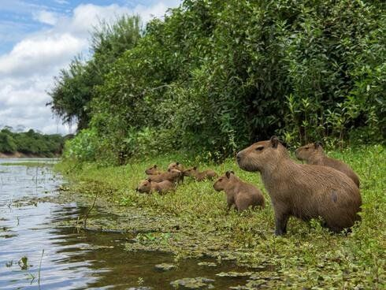

El capybara es un animal que depende profundamente del agua, por lo que su hábitat siempre está ligado a ambientes húmedos. Se encuentran de forma natural en gran parte de Sudamérica, desde Panamá hasta el norte de Argentina y Uruguay, ocupando regiones con abundante vegetación y fuentes de agua permanentes.
Los capybaras prefieren vivir en áreas como riberas de ríos, lagunas, pantanos y humedales, donde pueden sumergirse para escapar de depredadores y regular su temperatura corporal. Estos roedores son excelentes nadadores y pasan gran parte de su tiempo en el agua, lo que les proporciona seguridad y acceso a su alimento principal: plantas acuáticas y pastos.
En cuanto a la vegetación, buscan hábitats donde abunden pastos, hierbas y plantas acuáticas, ya que su dieta es estrictamente herbívora. Además, la vegetación densa a orillas de ríos y lagunas les brinda protección frente a depredadores como jaguares, caimanes y grandes aves rapaces.
A pesar de su dependencia de ambientes húmedos, los capybaras han demostrado ser animales adaptables. En algunas regiones donde la actividad humana ha modificado el paisaje, pueden encontrarse en cultivos, canales de riego o estanques artificiales, siempre que haya agua cercana y suficiente alimento.
Su hábitat no solo es vital para ellos, sino también para los ecosistemas en los que viven. Los capybaras cumplen un rol ecológico importante, ya que al pastar controlan el crecimiento de la vegetación y, a su vez, sirven de presa para varios depredadores, manteniendo el equilibrio natural de la cadena alimenticia.

| Características del hábitat | Descripción |
|---|---|
| Ubicación geográfica | Gran parte de Sudamérica, desde Panamá hasta el norte de Argentina y Uruguay. |
| Tipos de hábitat | Riberas de ríos, lagunas, pantanos y humedales. |
| Vegetación preferida | Pastos, hierbas y plantas acuáticas. |
| Dependencia del agua | Alta; pasan gran parte del tiempo en el agua para seguridad y alimentación. |
| Adaptabilidad | Pueden vivir en áreas modificadas por humanos si hay agua y alimento disponible. |